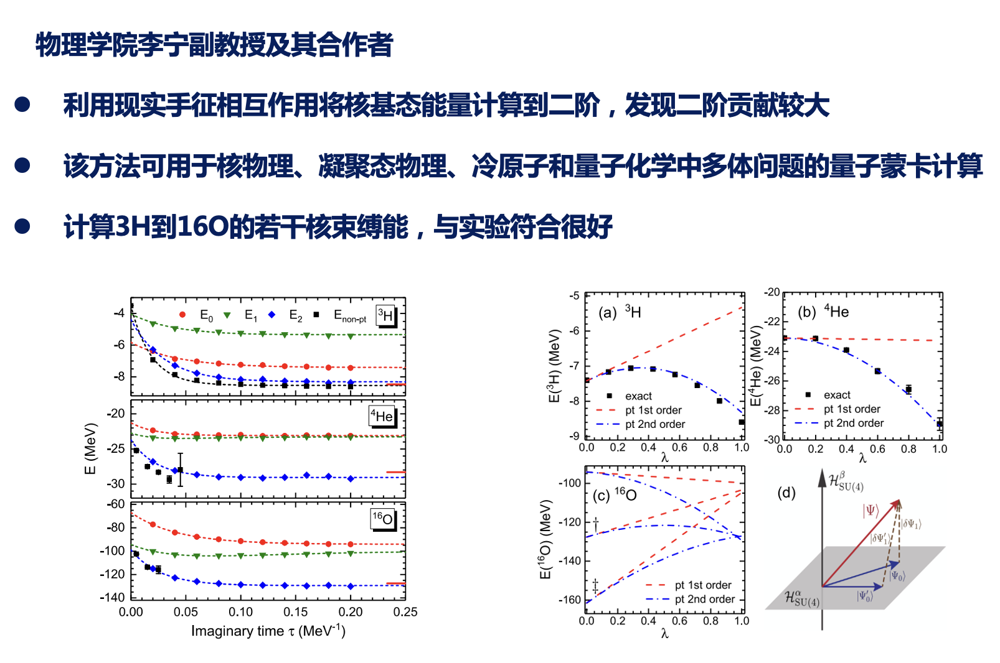

物理学院李宁副教授及其合作者在原子核结构从头计算方面取得重要进展

Perturbative quantum Monte Carlo method for nuclear physics
Bing-Nan Lu, Ning Li, Serdar Elhatisari, Yuan-Zhuo Ma, Dean Lee, and Ulf-G. Meißner
Phys. Rev. Lett. 128, 242501(2022).